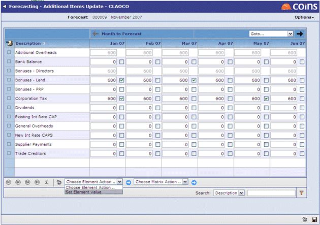
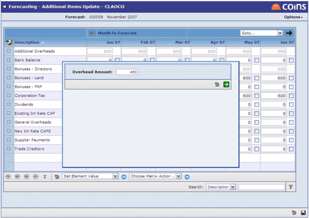
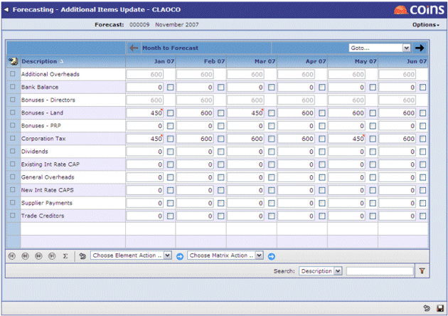
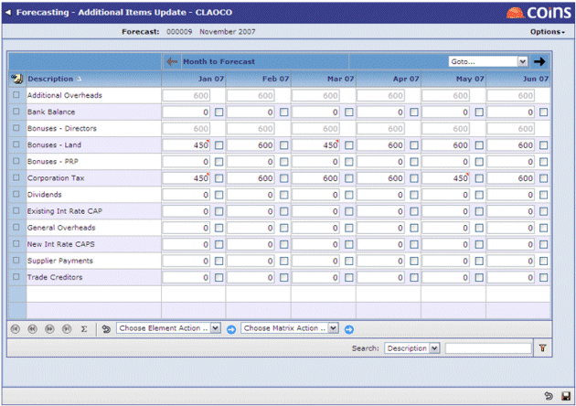
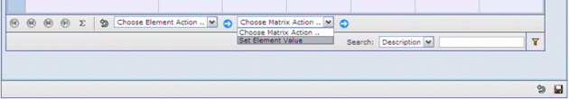
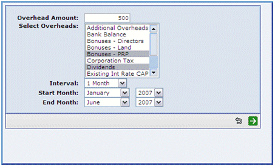
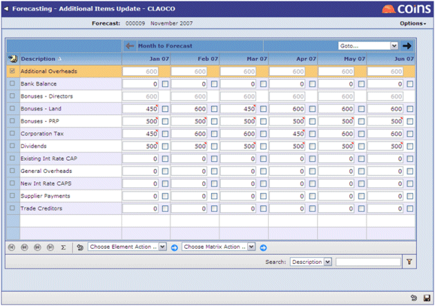

To update individual cells:
- Click
 at the bottom of the screen to open the matrix.
at the bottom of the screen to open the matrix. - Update the values in individual cells as appropriate.
- Click
 to store all of the new values in the grid.
to store all of the new values in the grid.
To update multiple cells with the same value:
- Click at the bottom of the screen to open the matrix.
- Select Set Element Value from Choose Element Action?. A box will appear to allow the required value to be entered: 
- Update the screen by clicking
 :

:
 - Click to store all of the new values in the grid.
To update one or more items over a time period:
- Click at the bottom of the screen to open the matrix.
- Select Set Element Value from the Choose Matrix Action? option. A box will appear to allow the required values and time periods to be entered: 
- Update the screen by clicking .

- Click to store all of the new values in the grid.
Cells that have changed are flagged with a red marker.